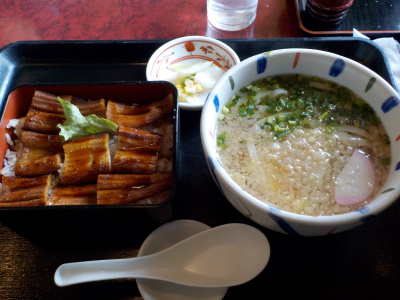

天霧大田店でアナゴを食べました。
2024/02/03

大田市に行ったので名物のアナゴを食べよう！と天霧に行きました。
アナゴとうどんのセットです。これで1130円だったかな。沢山食べれてこの価格は安いって思いました。
他にもアナゴ料理があったので、また大田のアナゴが食べたいって思ったら天霧に食べに行こうと思いました。
島根県大田市大田町イ2756-9
2024/02/03

大田市に行ったので名物のアナゴを食べよう！と天霧に行きました。
アナゴとうどんのセットです。これで1130円だったかな。沢山食べれてこの価格は安いって思いました。
他にもアナゴ料理があったので、また大田のアナゴが食べたいって思ったら天霧に食べに行こうと思いました。